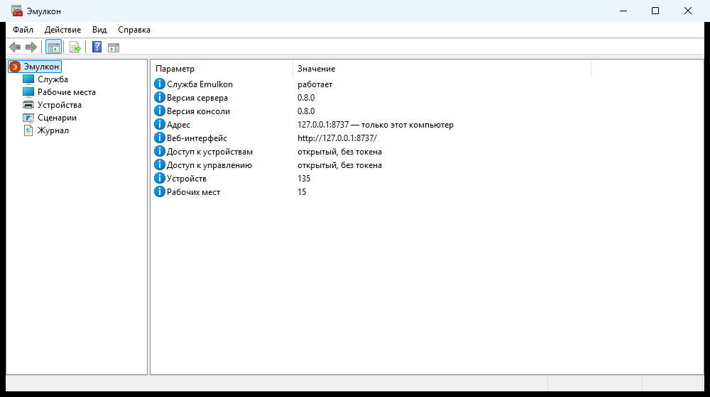

Оборудование для 1С без железа
Эмулкон подключается к «1С:Библиотеке подключаемого оборудования» как настоящий драйвер — один на ККТ, эквайринг, весы, принтеры, сканеры и ещё семь типов — и передаёт вызовы на сервер эмуляции со сценариями сбоев, журналом обменов и веб-интерфейсом. Конфигурация 1С не меняется: проверяете то, что уйдёт в работу.
Windows 10 и 11, x64. Драйвер для 1С — x64 и x86. Сервер — также Linux и Docker.

Что умеет
Не заглушка, которая отвечает «успешно», а модели устройств с проверками настоящего железа.
Настоящие модели
ККТ с ФН, сменами, чеками и коррекциями, маркировкой и очередью ОФД; терминал с оплатой, возвратом, отменой и сверкой; весы с тарой и перегрузом.
Сбои по сценарию
«Нет бумаги на третьем чеке», отказ терминала, задержка, обрыв связи, ответ после таймаута — правила включаются на лету.
Журнал обменов
Каждая команда драйвера, ответ, событие и сработавшее правило. Отбор и выгрузка в JSON Lines — для разбора и отчётов.
Кассы в сети
Один сервер на все рабочие места: каждая касса и каждый экземпляр оборудования в 1С — своё устройство со своим состоянием.
Веб-интерфейс
Устройства и их состояние, лента печати, экран терминала «приложите карту», вес на весах, журнал вживую.
Трей у кассы
Чек и слип всплывают у часов и печатаются на принтер Windows; окна терминала и весов — прямо на рабочем месте.
Консоль MMC
Служба, токены, рабочие места, устройства, сценарии и журнал — в привычной консоли Windows и Панели управления.
Обновляется сам
Установщик с «Изменить / Восстановить / Удалить», служба Windows, самообновление драйвера в 1С после перезапуска.
Все 12 типов оборудования
Полный список типов «Требований к разработке драйверов подключаемого оборудования» 4.8 — один драйвер на все.
Кому и зачем
Один инструмент — от отладки на ноутбуке до учебного класса и автотестов.
Разработка
- в журнале видно, какие методы драйвера вызвала 1С и с какими XML;
- состояние устройства меняется в один щелчок: закрыть смену, кончить бумагу, заполнить ФН.
Тестирование
- сценарии: «нет бумаги на третьем чеке», отказ терминала по сумме, обрыв связи, ответ после таймаута;
- исход оплаты по тестовой карте или копейкам суммы — прямо из 1С.
Внедрение и обучение
- один сервер на класс, у каждого рабочего места — свои устройства;
- чеки всплывают у кассира и печатаются на обычный принтер — с пометкой «ЭМУЛЯТОР».
Автотесты и CI
- Control API: состояние устройств, правила сбоев, журнал, сброс между тестами;
- повтор команды не выполняет её второй раз — тесты стабильны и при обрывах.
Поддержка
- журнал выгружается файлом и прикладывается к обращению;
- правило сбоя повторяет поведение «проблемного» устройства.
Как устроено
Драйвер ничего не решает сам: он передаёт вызов на сервер, где живут модели, сценарии и журнал.
Контракт БПО первичен
Методы, параметры и коды ошибок — по требованиям к драйверам 4.8, а не придуманы.
Всё в журнале
Каждый обмен, отказ и срабатывание правила. Токены и секреты в журнал не пишутся.
Явно эмулятор
«ЭМУЛЯТОР» в названии драйвера, на чеках и слипах; только тестовые данные — реальные карты и ПИН не принимаются.
Сравнение с другими эмуляторами для 1С
Эмуляторов ККТ для 1С много, но почти все работают с одним-двумя типами устройств, внутри процесса 1С и без журнала обменов.
| Эмулкон | 1С:Эмулятор ККТ с передачей данных 5.2 | «Учебный» драйвер ККТ 1С-Рарус | Эмулятор эквайринга TRISoft | Эмулятор эквайринга 1С-Рарус | Обработки и расширения (K-SOFT, «ККТ-ОНЛАЙН 54-ФЗ» и др.) | |
|---|---|---|---|---|---|---|
| Типы оборудования | все 12 типов требований 4.8 | ККТ, эквайринг, весы простого взвешивания, дисплей | ККТ | эквайринг | эквайринг | ККТ |
| Как подключается | драйвер в БПО | драйвер в БПО | драйвер | драйвер | драйвер, БПО 2.x | внутри конфигурации, привязаны к её версии |
| x64 | да, и x86 | да, и x86 | отдельные сборки по разрядности | нет, только x86 | нет, только x86 | — |
| Linux | драйвер — нет; сервер — да, и Docker | да | нет данных | нет данных | нет данных | — |
| Журнал обменов | да: команды, ответы, события; отбор и выгрузка | нет | нет данных | нет данных | нет данных | нет данных |
| Управление извне | да: веб-интерфейс, Control API, консоль MMC | нет | нет данных | нет данных | нет данных | нет данных |
| Сбои | сценарии: ошибка, задержка, обрыв, поздний ответ, смена состояния — по устройству, методу, параметру, N-му вызову | отказ терминала по порогу суммы | нет данных | ошибки терминала | принять или отклонить вручную | нет данных |
| Несколько касс | один сервер, у каждой кассы и экземпляра — своё устройство | несколько экземпляров — только с одинаковыми настройками | нет данных | нет данных | нет данных | нет данных |
| Чек и слип | лента печати в вебе, всплывающее окно у кассы, печать на принтер Windows, QR-код ФНС | чек на экране на доли секунды | похож на настоящий: фискальные признаки, QR-код, чеки сессии списком | слип и чек, свои строки слипа | нет данных | на экран или обычный принтер |
| Исходный код | открыт, Apache-2.0 | нет данных | нет данных | нет данных | нет данных | нет данных |
Сведения о других продуктах — по их открытым описаниям и обзорам на октябрь 2026 года; сами продукты не запускались. «Нет данных» — в описаниях не нашли. Нашли неточность — напишите в Issues, исправим. Названия продуктов принадлежат их правообладателям.
Проверено на конфигурациях 1С
Сквозной прогон в каждой: подключение драйвера в БПО, тест устройств, чек, оплата, взвешивание. Результаты прогонов.
Как начать
Десять минут от скачивания до первого чека.
Установите
Скачайте установщик и запустите от администратора. Он поставит службу, трей и драйвер и сам проверит, что всё работает.
Добавьте драйвер в 1С
«Подключение и настройка оборудования» → «Драйверы оборудования» → «Добавить новый драйвер из файла»:
Program Files\Emulkon\1C\driver.
Подключите устройства
Создайте экземпляры с драйвером «ЭМУЛЯТОР Эмулкон», нажмите «Тест устройства» — и пробивайте чек. Инструкция — на странице загрузок сервера.
Вопросы
Это бесплатно?
Да. Эмулкон распространяется с открытым исходным кодом по лицензии Apache-2.0 — его можно использовать, в том числе в коммерческой разработке, и дорабатывать.
Можно ли им пробить настоящий чек или провести настоящий платёж?
Нет, и это сделано намеренно. Эмулкон — инструмент разработки и тестирования: «ЭМУЛЯТОР» в названии драйвера и на документах, только тестовые данные, реальные номера карт и ПИН не принимаются.
Нужно ли менять конфигурацию 1С?
Нет. Эмулкон подключается в БПО как обычный драйвер из файла — так же, как драйвер настоящего оборудования.
Как подключить несколько касс?
Поставьте Эмулкон на один компьютер и включите «Сервер для касс в сети» в консоли («Служба → Свойства»), там же выдайте токены. На кассах в параметрах драйвера укажите адрес сервера; установщик там не обязателен — драйвер можно скачать со страницы загрузок сервера.
Работает ли на Linux?
Сервер — да, в том числе в Docker. Драйвер для 1С пока только под Windows (x64 и x86).
Windows предупреждает о неизвестном издателе
Подписи кода пока нет. Проверьте установщик по SHA256SUMS из релиза и выберите «Подробнее» →
«Выполнить в любом случае».
Нашёл ошибку или не хватает устройства
Напишите в Issues: для ошибки приложите выгрузку журнала, для нового поведения — ссылку на требования БПО.